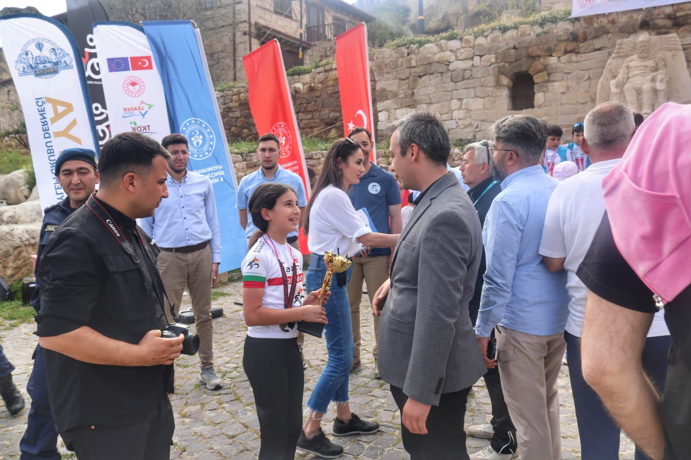
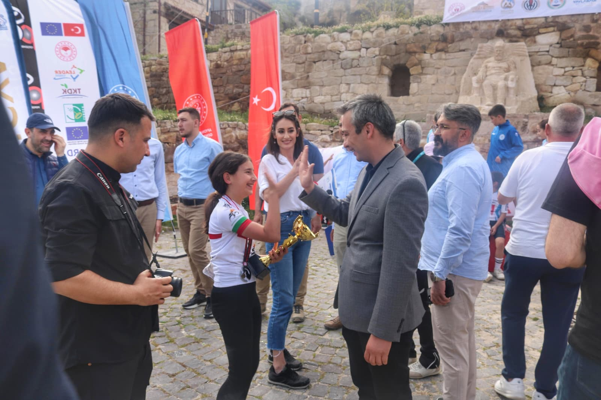

Upuzun bir aradan sonra herkese merhaba,
Hatta selamün aleyküm, halo, bonjour, konnichiwa, buongiorno ve assalamu’alaikum...
Hatta durun! Bence dünyanın en güzel dilinden vereyim selamımı. En sevdiğim... Öz Türkçe...
Allah'ın selameti ve rahmeti üzerinize olsun.
Uzun süredir ortalarda yoktun diyecektin. Arayan soranlara çok teşekkür ederim. Neden yoktum o ayrı bir belgesel konusu. Kalbimi açtıklarım nerelerdeydim bir kısmını dinlediler. Neeeyseee bugün konumuz o değil.
E ne peki...
Dirim!
Kız dirim ne be! diyen oldu duydum :)
Hadi şöyle başlayalım... Bismillah..
Ey sevgili dostlarım!
Çok muhterem kardeşlerim! Siz ister inanın ister inanmayın nazar var abilerim, ablalarım...
Adımın Feyza olduğu kadar eminim.
Hani nazar zaten bence inanılacak bir şey değil çünkü var. Var olan bir şeye inanılmaz :)
Sadece bazılarımız görmüyor.
Feyza diye biri var mı diye sorsalar “Feyza’nın olduğuna inanıyorum ya da inanmıyorum” diyemeyiz.
Allah’a çok şükür ben varım :)
E hadi bize kanıtla diyeceksin! Nacizane deneyeyim.
Kendi kişisel sosyal medya tarihimin en uzun arasını bu kış verdim! aşağı yukarı sekiz ay...
Çok yoğun kullanırken bir anda hiç paylaşım yapasım gelmedi. Ama hiç!
Nedeni mi? Tam olarak Allah bilir tabii ki :)
Bir gün inşallah nedenlerini anlatırım ben de...
Taa ki geçtiğimiz hafta sonu gittiğimiz Afyon yarışında bir an yaşayana kadar...
Ödül töreni bitişi... Kalabalık, curcuna, herkes toz toprak içinde...
Sonunda tören bitti!
Son toplu bir fotoğraf çekildi herkes bir anda ortaya dağılıverdi...
El sıkışıyoruz, teşekkürler, vedalar, helalleşmeler...

Herkes mutlu. Yüzlerde gülümseme.

Tam o an bir kare belirdi kalabalığın tam orta yerinde...
Aynı filmlerdeki gibi... Peri, önünde biri...
On yaşında küçücük bir kız çocuğunu önemseyen biri...
Hem de ceketli!
İkisinin de yüzlerinde nasıl içten bir gülümseme...
Etraflarında onları çevreleyen mavi gömlekli aydınlık yüzler...
Ben o an Muhammedi şuuru o bakışlarda gördüm...
O an biri çekti hızlıca ikisinin fotoğrafını...
Deklanşörün sesi ile kendime geldim...
Hemen peşinden koştum. Kimsiniz dedim...
Kaymakam korumasıyım dedi...
Ne olur bana da gönderin o kareleri dedim...
Ve söz verdiği iki kareyi bana yolladı...
İnsanın sevgisi yüreğine fazla gelince taşarmış...
Ben de o büyülü anı herkes görsün istedim...
Ve sekiz ay sonra ilk karemi böylelikle paylaşıverdim...
Sonuç mu? Tabiki nazar değdi :)
Sabahına zehirlendim...
İnanılır gibi değil...
Acilde beklerken bir kedicik içeri giriverdi...
Pençesini elimin üstüne atıverdi...
Doktor tetanoz aşısı istedi...
Çok büyük bir acı ile kendimden geçtim...
Sonuç mu? Nazar var...
Biz bir tek Yüce Allah’tan korkarız...
Yani, korunacağız...
Nasıl mı? Bizi yaradana sığınarak...
Allah hepimizi korusun...
Hayır duaları ile hayırlı Cumalar...
Mayıs’ın onbeşi, 2026. Bostanlı, İzmir. 06.24
Sevildiğimizi o kadar çok hissettirdiniz ki iyi ki zehirlenmişim dedim :)